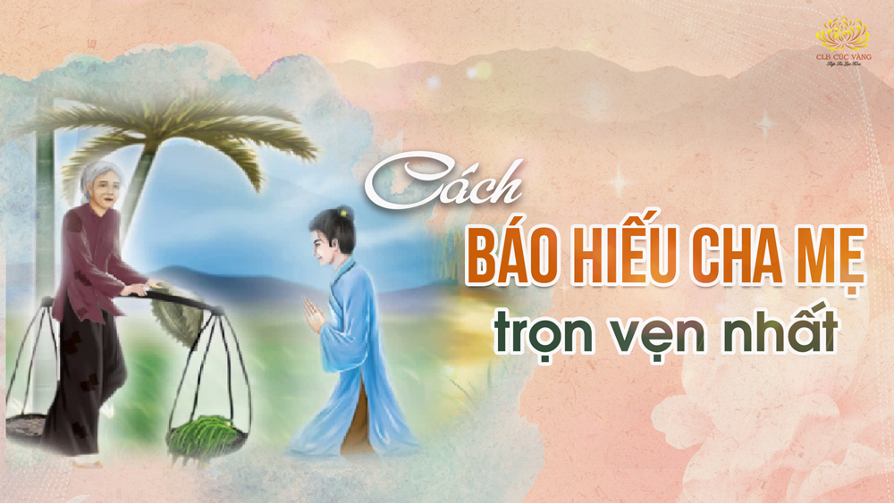
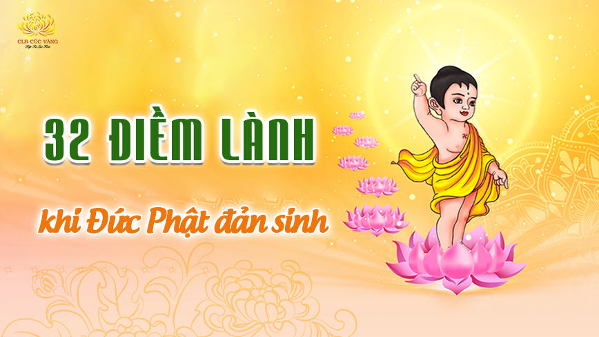
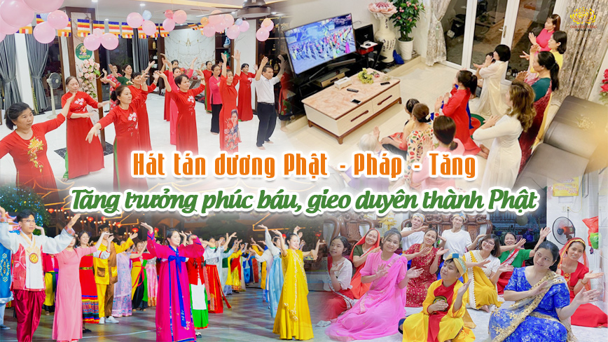
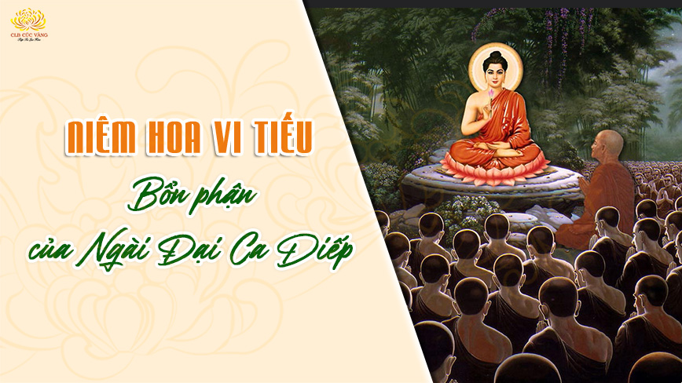
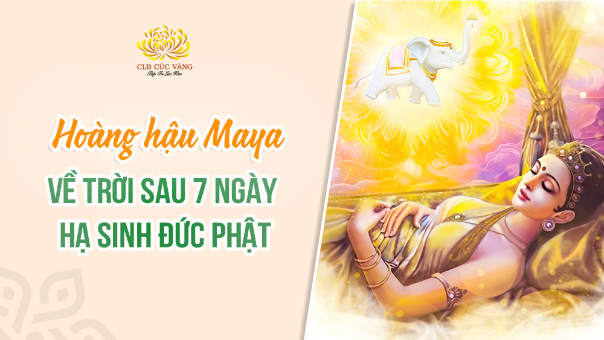
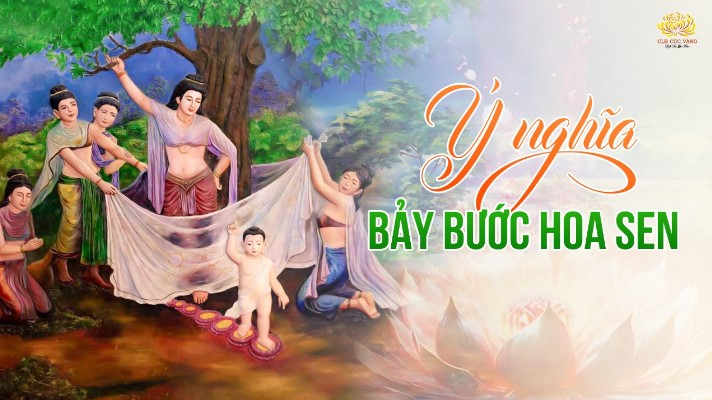
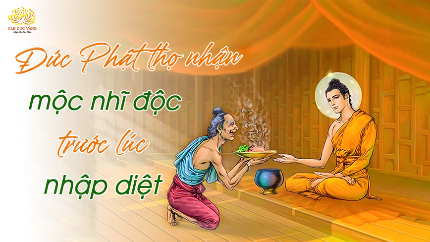

Bài cúng cô hồn tháng 7 đúng chuẩn để gia đình được hộ trì, may mắn
Hướng dẫn cách cúng cô hồn tháng 7 đúng Pháp và cách bày trí mâm cúng cô hồn tháng 7 đơn giản, đầy đủ nhất để hương linh được no đủ, bớt khổ.
Chi tiếtMâu thuẫn mẹ chồng nàng dâu: 4 cách tháo gỡ giúp gia đình hòa thuận
Mẹ chồng nàng dâu là mối quan hệ dễ nảy sinh mâu thuẫn nếu thiếu thấu hiểu. Nếu người con dâu biết lắng nghe, thấu hiểu và sống có trách nhiệm, mối quan hệ này sẽ trở nên hài hòa hơn.
Chi tiết
Cách báo hiếu cha mẹ trọn vẹn - Dù cha mẹ còn sống hay đã khuất
Đây là những cách báo hiếu cha mẹ trọn vẹn và thiết thực nhất theo lời Đức Phật dạy; mang lại nhiều phúc lành, an lạc cho cả cha mẹ còn sống và đã khuất.
Chi tiết
Cõi Niết bàn và cách đạt đến Niết bàn, được hạnh phúc tuyệt đối
Niết bàn là trạng thái tâm không phiền não, tâm không còn dính mắc, được hạnh phúc, an vui.
Chi tiết
Thập nhị nhân duyên: Hiểu rõ để giảm trừ phiền não, giải thoát khổ đau
12 nhân duyên là một vòng tròn khép kín gồm 12 mắt xích của luân hồi. Để phá được vòng luân hồi này, có thể phá mắt xích “vô minh” hoặc “ái” bằng chính Pháp.
Chi tiếtCách tụng kinh Dược Sư và thực hành để hóa giải tai ương
Tụng kinh Dược Sư giúp chuyển hóa nghiệp bệnh, tiêu trừ hoạnh tử dẫn đến chết uổng và kéo dài thọ mạng.
Chi tiết5 lợi ích khi nghe Pháp: Khai mở trí tuệ, chuyển hóa khổ đau
Nghe Pháp có năm lợi ích: Được nghe điều chưa nghe, làm cho trong sạch điều được nghe, đoạn trừ nghi, làm cho tri kiến chánh trực, làm cho tâm tịnh tín.
Chi tiếtẢo tưởng: 2 cách thoát khỏi để sống thực tế, có quyết định sáng suốt
Để thoát khỏi tình trạng ảo tưởng, hãy phải nhận xét đúng về mình. Hãy tin vào bản thân bằng khả năng chân thật của mình, nếu khả năng đó còn yếu kém thì nên học hỏi, rút kinh nghiệm những việc làm chưa tốt của mình.
Chi tiết
3 tháng an cư kiết hạ – cơ hội gieo trồng cội phúc, vào hướng quả
Tu theo 3 tháng an cư kiết hạ của chư Tăng sẽ thông tỏ hơn về Tứ diệu đế và Bát chính đạo, khổ, vô thường, vô ngã; sẽ tăng trưởng sự giác ngộ và công đức phước báo cho mình.
Chi tiết
Cúng dường trường hạ: Cơ hội để nhận được nhiều phúc lành
Công đức cúng dường trường hạ giúp chúng ta tâm tư được mát mẻ trong hiện tại và có nhiều tài sản, con cái hiếu thuận,... nhiều đời về sau.
Chi tiếtBiểu hiện của nghiện game và 2 cách cai game hiệu quả, sống tích cực
Thực hành 2 cách này sẽ giúp bạn cai nghiện game hiệu quả và hạn chế tái nghiện. Từ đó, giúp bạn có được sức khỏe tốt; hướng đến lối sống lành mạnh, tích cực.
Chi tiếtMùa an cư kiết hạ là gì? Phước báu vô lượng trong mùa an cư
An cư kiết hạ có ý vô cùng quan trọng đối với hàng đệ tử Phật xuất gia và tại gia. Qua 3 tháng an cư, người xuất gia có thể đắc quả vị, còn người tại gia có thể vào hướng quả nếu đủ duyên.
Chi tiếtBồ Tát Thích Quảng Đức tự thiêu và 3 sự linh ứng nhiệm màu
Sự kiện Hòa thượng Thích Quảng Đức (hay còn gọi là Bồ tát Thích Quảng Đức) tự thiêu trong thời kỳ 1954 – 1963 đã gây chấn động nhân loại và sự nhiệm màu của Phật Pháp.
Chi tiếtPhật đản: Ngày lễ linh thiêng mang lại phước lành khi tham gia
Lễ Phật đản là ngày kỷ niệm Đức Phật Thích Ca Mâu Ni đản sinh. Đây là dịp để Phật tử tích lũy phước báu và lan tỏa năng lượng an lành.
Chi tiết
Giải mã 32 điềm lành ứng hiện khi Đức Phật đản sinh
Khi Đức Phật đản sinh, có 32 điềm lành xuất hiện. Đó là kết tinh từ công đức Ba-la-mật của Ngài tích lũy trong vô lượng kiếp hành Bồ tát đạo.
Chi tiết
Hát tán dương Phật - Pháp - Tăng mùa Phật đản: Tăng trưởng phước báu, gieo duyên thành Phật
Hát tán dương Phật - Pháp - Tăng trong dịp Phật đản là cơ hội tôn vinh sự đản sinh cao quý, gieo trồng phước báu, tạo nhân duyên sinh lên cõi trời và thành Phật sau này.
Chi tiết
Niêm hoa vi tiếu: Ngài Ca Diếp và nhân duyên kết tập kinh điển
Niêm hoa vi tiếu là sự kiện Tôn giả Đại Ca Diếp lãnh hội, tiếp nhận ngụ ý kết tập kinh điển mà Đức Phật truyền trao trong Pháp hội truyền thừa.
Chi tiết
Hoàng hậu Maya về trời sau 7 ngày hạ sinh Đức Phật do công đức quá lớn
Hoàng hậu Maya là mẹ của Đức Phật Thích Ca. Bảy ngày sau khi hạ sinh Ngài, Hoàng hậu Maya về cung trời Đâu Suất. Vậy có phải Đức Phật thiếu phước khi mẹ Ngài mới rời xa Ngài sớm như vậy?
Chi tiếtTôn giả Đại Ca Diếp: Bỏ vinh hoa phú quý, trở thành đệ nhất đầu đà
Tôn giả Ma Ha Ca Diếp – bậc đầu đà đệ nhất, lãnh hội ý của Đức Phật trong sự kiện niêm hoa vi tiếu và là người chủ trì trong cuộc đại hội kết tập kinh điển lần thứ nhất
Chi tiếtTiết Thanh minh: Cách cúng lễ đầy đủ để gia chủ nhận được phúc lành
Tết Thanh minh là dịp để con cháu thể hiện tình cảm và lòng biết ơn với gia tiên, tiền tổ, bài viết sẽ giúp quý vị tìm hiểu về thời gian,cách cúng lễ chi tiết, đầy đủ để cả người sống và người đã khuất được nhiều phúc lành.
Chi tiếtTổ chức lễ giỗ Tổ: Vun bồi tâm tri ân, tăng trưởng phước báu
Tổ chức lễ giỗ Tổ mang ý nghĩa nhân văn sâu sắc, giúp tăng trưởng tâm tri ân và là cơ hội để vun bồi nhiều phước báu.
Chi tiếtLâm Tỳ Ni viên: Thánh tích linh thiêng đánh dấu sự đản sinh của Phật
Vườn Lâm Tỳ Ni được biết đến là một trong tứ Thánh tích Phật giáo quan trọng, đánh dấu nơi Đức Phật Thích Ca đản sinh hơn 2600 năm về trước.
Chi tiết
Lý giải ý nghĩa của 7 bước hoa sen nâng gót khi Đức Phật đản sinh
Khi vừa đản sinh, Đức Phật đã bước đi bảy bước và có hoa sen hóa hiện nâng gót, do Ngài là bậc đại phước đức và mong muốn thị hiện để độ cho chúng sinh.
Chi tiếtSự kiện phân chia Xá lợi Phật – Cội phước cho khắp các cõi và muôn đời sau
Khi Đức Phật nhập Niết bàn, Ngài để lại vô số Xá lợi. Sau đó, Xá lợi được phân chia và tôn thờ ở nhiều cõi: Trời, Người, Long cung,... trở thành bảo vật quý báu.
Chi tiếtNgũ Bách Danh – 500 lễ sám hối tội lỗi sát sinh cầu bình an
Ngũ Bách Danh là chương trình tu tập nhằm sám hối các tội lỗi sát sinh, hồi hướng mong nguyện tiêu trừ bệnh tật và cầu bình an.
Chi tiết
Lòng từ bi vô lượng của Đức Phật khi thọ nhận món mộc nhĩ độc trước lúc nhập Niết bàn
Đức Phật chọn nhập Niết bàn bằng cách thọ nhận món mộc nhĩ độc để độ cho ông Cunda, cũng như thị hiện cho chúng sinh rằng, bậc đắc đạo vẫn có thể bị bệnh.
Chi tiếtXuất gia – con đường giải thoát, ruộng phước cho chúng sinh
Xuất gia là con đường đưa đến giải thoát và giúp tu sĩ báo hiếu cha mẹ nhiều đời, trở thành ruộng phước điền cho chúng sinh.
Chi tiếtĐệ tử cuối cùng của Đức Phật – Tu Bạt Đà La: Từ du sĩ ngoại đạo đến Thánh quả
Tu Bạt Đà La là đệ tử cuối cùng của Đức Phật, được Ngài thế độ trước giờ nhập Niết bàn. Sau thời gian ngắn tu tập, ông đã chứng quả A-la-hán.
Chi tiết4 lợi ích khi niệm ân đức xuất gia của Đức Phật: Bớt khổ, giảm tâm tham, được an lạc,...
4 lợi ích khi niệm ân đức xuất gia của Thái tử Tất Đạt Đa... Đây là cơ hội nuôi dưỡng, tăng trưởng tâm tri ân, được an lạc, giảm trừ tâm tham và giúp các Phật tử gieo duyên gặp chính Pháp ở các kiếp sau,...
Chi tiếtKhổ hạnh lâm – Nơi ghi dấu 6 năm Đức Phật khổ hạnh ép xác
Khổ hạnh lâm là nơi Đức Phật tu hành khổ hạnh ép xác đến cùng cực trong sáu năm ròng rã. Ngài thị hiện khổ hạnh cực đoan để làm phương tiện độ sinh.
Chi tiết